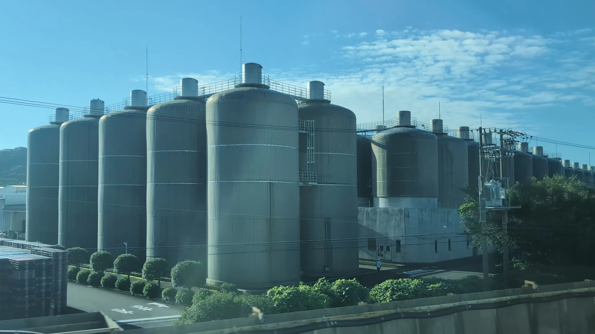
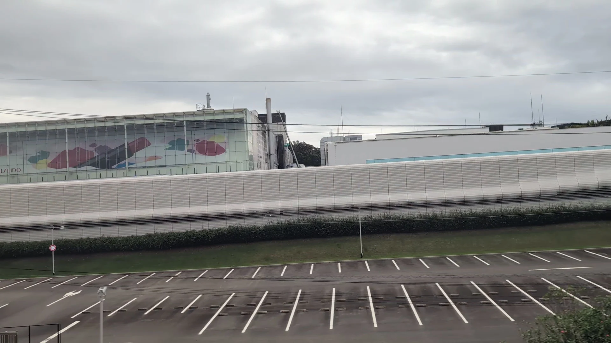
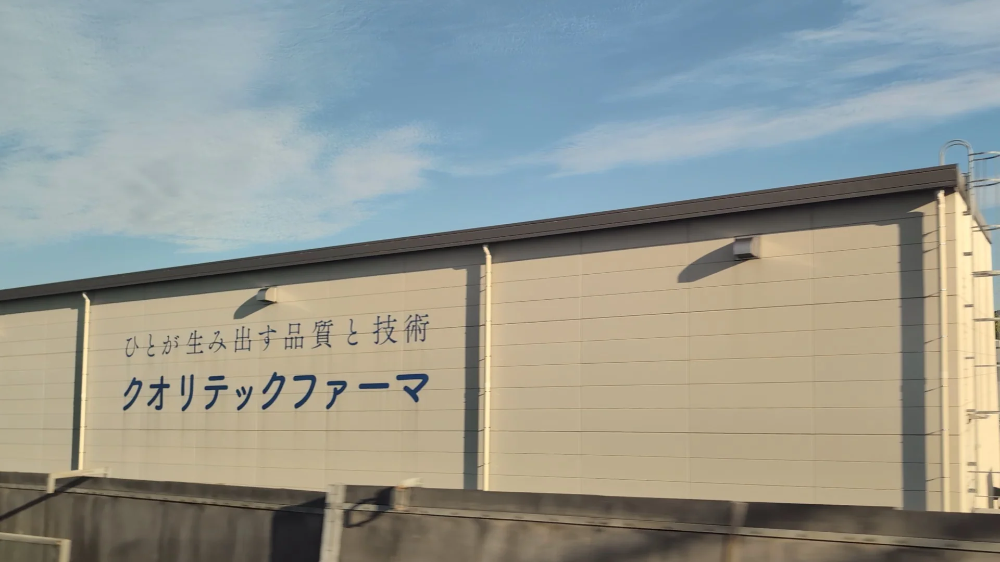

依區間瀏覽
搭乘東海道新幹線，尋找咖啡、飲料、化妝品與日常用品的生產地。用車窗照片認識沿線工廠，並查看座位側與辨認地標。
新橫濱 → 小田原
小田原・鴨宮

E座側行進方向右側 Meiji Seika Pharmatech 製藥廠
找找屋頂上的紅色招牌
酒匂川東側的米色建築，屋頂掛著紅色公司名稱。這是小田原市鴨宮的製藥廠，生產錠劑與注射劑。
三島 → 新富士
富士山腳下

E座側行進方向右側 UCC 富士工廠
咖啡白塔與富士山
找找白塔上的「UCC COFFEE FUJI」。這座生產烘焙咖啡的工廠後方，正好映著富士山。

E座側行進方向右側 日本製紙 富士工廠・富士地區
富士山下的生活用紙
紅白煙囪與富士山是辨認地標。廠區內的Crecia Kasuga新富士工廠，生產衛生紙捲等家庭用紙。

E座側行進方向右側 興亜工業 總部工廠
夜色中的彩虹煙囪
這裡生產瓦楞紙板原紙等紙材。照片中的「虹煙」是2026年11月11日至23日的限定燈光演出，並非常設景觀。
靜岡 → 掛川
燒津・大井川

A座側行進方向左側 SAPPORO 靜岡啤酒工廠
靜岡的一杯，來自燒津
成排的銀色酒槽與星形標誌很醒目。靜岡限定啤酒「静岡麦酒」，也出自燒津的這座工廠。

E座側行進方向右側 紀文食品 靜岡工廠
魚板包裝上的「＋S」
連綿的紅屋頂上，露出紀文的標誌。這裡生產魚板、竹輪；包裝上的製造所代碼「＋S」，指的就是這座工廠。
就在大井川鐵橋附近，另一側車窗可見味之素的建築。

E座側行進方向右側 日本雀巢 島田工廠
河對岸的咖啡招牌
寬廣河灘映入眼簾時，往山腳下看。島田工廠生產咖啡，也將萃取後的咖啡渣用作鍋爐燃料。
從大井川鐵橋往上游看，工廠距離鐵路約1.3公里。

A座側行進方向左側 味之素食品・味之素Bakery
粥與還沒烤好的麵包
向外凸出的圓弧白牆上，寫著「Knorr」。同一地址內，有生產粥品的味之素食品靜岡工廠，以及生產冷凍麵糰的味之素Bakery島田事業所。
大井川鐵橋附近，與紀文的紅色標誌塔分列鐵路兩側。
掛川 → 濱松
掛川・袋井・濱松


A座側行進方向左側 丸大食品 靜岡工廠
包裝上的「＋P」指向掛川
樹列上方是紅色丸大食品標誌，下方是一排圓窗。公司在2023年介紹過這裡生產的長條維也納香腸，包裝上的製造所代碼是「＋P」。
掛川站往濱松方向約4公里。下行列車會先經過資生堂。

A座側行進方向左側 POLA化成工業 袋井工廠
玻璃裡，是自己搭的列車
留意化妝品工廠那一整排玻璃。光線恰好時，會映出你正搭乘的新幹線。

A座側行進方向左側 大塚製藥 袋井工廠
藍色牆面就是寶礦力的地標
綠色草坪後方，是巨大的藍色「POCARI SWEAT」牆面。一眼就能認出這座生產寶礦力水得等飲料的工廠。


E座側行進方向右側 Unicharm Products 靜岡工廠
庭園裡也有熟悉的標誌
順著白牆上的黃色與橘色波紋看，庭園裡也有大型標誌。這裡生產嬰兒與成人紙尿褲、女性生理用品、清潔擦拭布等產品。
掛川站往濱松方向約4公里。下行列車會先經過日東工業。

E座側行進方向右側 好侍食品 靜岡工廠
咖哩與點心，都在這裡
找找寫著「ハウス食品」的招牌塔。這座袋井工廠生產佛蒙特咖哩、北海道白醬料理塊，以及「とんがりコーン」玉米脆角。

E座側行進方向右側 YAMAHA發動機 袋井南工廠
從鐵路旁，駛向世界的海洋
紅色YAMAHA字樣與白色垂直格柵是地標。這裡生產的是安裝在船尾的引擎，也就是船外機。

濱松 → 豐橋
高塚・濱名湖・豐橋

A座側行進方向左側 鈴木（SUZUKI）總部・高塚
屋頂上方露出紅色S
住宅屋頂之間，露出汽車上熟悉的紅色S。這裡是鈴木總部；過去在高塚生產的機車引擎，已於2018年移至濱松市都田生產。
濱松站與濱名湖之間，靠近JR高塚站。下行在渡過濱名湖前，上行則在渡過之後。

A座側行進方向左側 SINFONIA TECHNOLOGY 豐橋製作所
輕輕搬運半導體晶圓
草坪後方的長牆上，寫著「豊橋製作所」「創業1917年」。這座主要工廠生產潔淨搬運設備，在製造手機等產品所需的半導體時，運送薄薄的矽晶圓。
豐橋市三彌町，二川站往東京方向。下行在抵達豐橋前，上行在離開豐橋後。
同樣的公司名稱，也可能是廣告

三河安城 → 名古屋
安城

E座側行進方向右側 山崎麵包 安城工廠
早餐麵包，從鐵路旁出發
太陽標誌與紅色「ヤマザキ」就在近旁。三河安城附近的這座工廠，生產麵包與日式、西式糕點。

E座側行進方向右側 NICHIBAN 安城工廠
熟悉的招牌，轉變中的生產
紅白藍三色的「セロテープ」招牌很醒目。這座膠帶工廠，也將生產範圍拓展至醫療用途。
參考資料
2026年設備資料列有醫療輔助用、紙質與塑膠膠帶。2025年官方說明指出，Cellotape相關生產已集中至埼玉，因此不能只憑招牌判斷安城目前仍生產這項產品。
名古屋 → 岐阜羽島
清須

E座側行進方向右側 麒麟啤酒 名古屋工廠
酒槽像一杯杯巨型啤酒
銀色與金色相間的酒槽排列成行。越過名古屋往西，找找這座位於清須、生產一番搾啤酒的工廠。
米原 → 京都
米原・彥根・近江

A座側行進方向左側 YANMAR 中央研究所
離開米原，找找大時鐘
長條建築上有紅色「YANMAR」與大時鐘。米原的這個據點是中央研究所，研究提高引擎燃油效率、替代能源等技術。
下行離開米原後不久；有乘客記錄搭Kodama約1分鐘後看見。上行則在抵達米原前。

E座側行進方向右側 富士達（FUJITEC）Big Wing
每天上下樓的技術，來自這裡
高聳的塔是電梯研究塔。同一廠區內也有製造標準型與客製電梯的工廠，同時負責研發與生產。

A座側行進方向左側 Joyson 愛知川製造所
玻璃入口上方的 JOYSON
愛知川附近，玻璃入口上方可以看見「JOYSON」字樣。這座工廠研發並製造汽車零件及兒童汽車安全座椅。

A座側行進方向左側 LOTTE 樂天 滋賀工廠
巨大的零食招牌排成一列
大型零食與冰品招牌一字排開。這裡生產「雪見だいふく」「クーリッシュ」、Toppo等產品，但招牌上的商品並非全都在此製造。

A座側行進方向左側 Qualitech Pharma 滋賀工廠
沿線外牆的藍色片假名
野洲川附近，淺色外牆上的一行藍色片假名就是公司名稱。這座位於野洲市三上的工廠，受其他企業委託製造藥品。

A座側行進方向左側 日清食品 滋賀工廠
杯裝米飯，也從這裡出發
在栗東找找寫著「日清食品」的建築。這裡也生產「カレーメシ」等杯裝米飯，與另一側E座窗外的關西工廠是不同據點。
京都 → 新大阪
山崎

E座側行進方向右側 三得利 山崎蒸餾所
山腳下的威士忌故鄉
越過住宅屋頂與電線，能看到「山崎」字樣。用於山崎單一麥芽威士忌的麥芽原酒，就在這座蒸餾所製造。
先確認座位側
普通車下行往新大阪時，A座在行進方向左側，E座在右側；上行往東京時相反。綠色車廂（Green Car）的D座，與普通車E座在同一側。
閱讀這份指南前
各工廠的用途與製造品項，依2026年11月確認的個別資料整理；資料中的歷史年月另行標示。同一車站區間內的排列不代表實際經過順序，距離也都是概數。
照片：michikusa。POLA照片中的列車彩繪：© Disney。